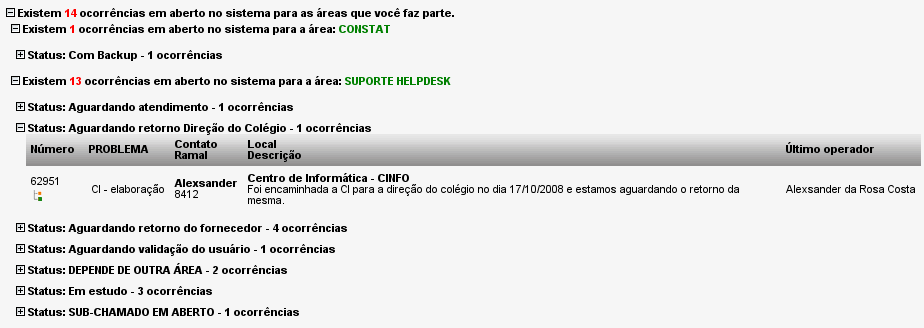

Home
O menu Home está acessível a todos os usuários com permissão ao módulo de ocorrências do sistema.
Iniciar (Home -> Iniciar)
Essa opção
não existe para usuários de nível
somente-abertura.
Essa função exibe um quadro com todos os chamados em aberto no sistema para as áreas em que o usuário logado faz parte. As listagens de chamados são agrupadas por status e podem ser visualizadas ou ocultadas ao clicar no sinal de "+" ou "-" à sua esquerda. Para ter acesso aos detalhes de cada chamado basta clicar no seu respectivo número.

Tela exibindo o resumo do total de ocorrências em aberto no sistema - versão 2.0rc3